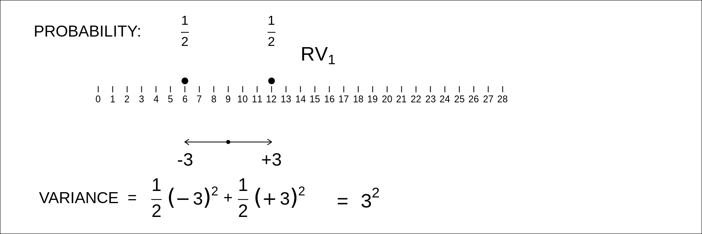
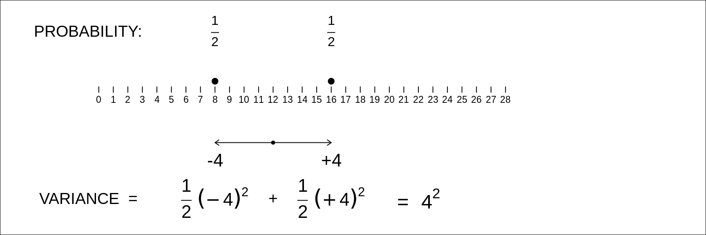
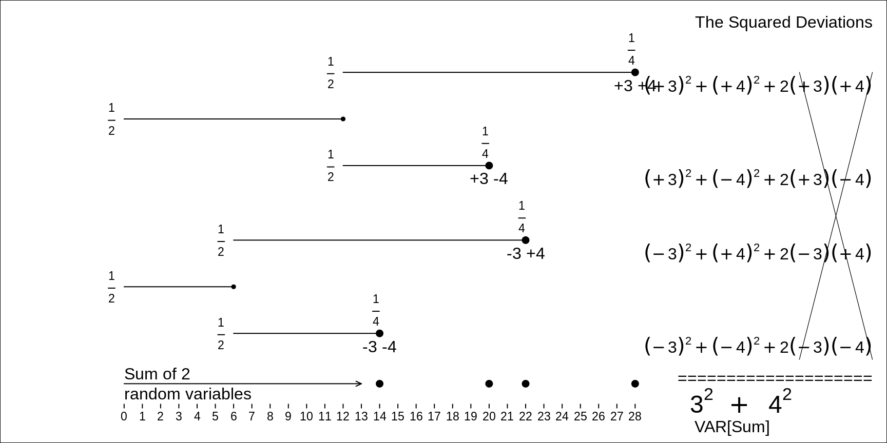

Chapter 12 Distributions /Random Variables
12.1 Objectives
This central chapter addresses a fundamental concept, namely the variance of a random variable. It gives the laws governing the variance of a sum of 2, or (especially) \(n\) random variables – and even more importantly – the laws governing the variance of a difference of two random variables. The latter is central, not just to simple contrasts involving just 2 sample means or proportions, but also in the much wider world of regression, since the variance (sampling variability) of any regression slope can be viewed as the variance of a linear combination of random ‘errors’, or random deviations, or random variables. So, if there is one ‘master’ formula to pay attention to and to ‘own’, it is the one for the variance of a linear combination of random variables. All others are special cases of this.
So, the specific objectives are to truly understand
the concept of a random variable.
the concept of the (expectation and) variance of a random variable.
why it is that, when dealing with the sum of two or more independent random variables, it is not their standard deviations that sum (add), but rather their variances.
likewise, why it is that, when dealing with the difference of two independent random variables, or some linear combination of \(n\) independent random variables involving positive and negative weights, why the component variances add, and with what weights.
12.2 Random Variables
Textbook definitions of RANDOM VARIABLE
(Note: JH has changed the usual \(X\) to \(Y\))
A variable (\(Y\)) whose value is a number determined by the outcome of an experiment
A variable (\(Y\)) whose value is a numerical outcome of a random phenomenon
Textbook definitions: DISCRETE Random Variable
A random variable that assumes only a finite (or countably infinite) number of distinct values
Discrete random variables have “a finite or countably infinite number of possible values, each with positive or zero probability.
A discrete random variable \(Y\) has a finite number of possible values
Random Variable: DISCRETE or CONTINUOUS ?
- How long you have to wait for bus / elevator / surgery/ download to complete
- the blood group of n = 1 randomly selected person
- how many tries before pass a course
- how many of n = 20 randomly selected persons will return questionnaire in pilot study
- length of song on a CD
- mean cholesterol level in sample of n = 30 randomly selected persons
- how hot it is going to be today
- how much snow we will get next winter
- time someone called (on answering machine)
- value of test-statistic if 2 populations sampled from have the same mean
- how much ice McDonalds puts in soft drink
- how many calories in hamburger
- how many numbers you get correct in 6/49?
- where roulette wheel stops
- how many “wrong number” calls received
- how many keys you have to try before get the right one
- how much water consumed by 100 homes
PROBABILITY DISTRIBUTION \(p(y)\) associated with (Discrete) Random Variable \(Y\)
The ordered pairs {y, Probability(\(Y\) = \(y\)) } , where \(y\) ranges over the possible values of \(Y\)
Probability(\(Y\) = \(y\)) is often shortened to Prob(\(Y\) = \(y\)) or P(\(Y\) = \(y\))
Can display distribution as formula, table, graph, etc.
EXAMPLES
(Note: the only reason we start with lotteries is that we can give the exact (mathematically-known) probabilities of each possible result. In most of the other examples, the probabilities will be context-specific.)
- Y = Winnings on a $1 wager on la Quotidienne 3 (same distribution for exact order and any order)
....... ($)
........ y .. Probability(Y = y)
........ 0 ............... 0.999
...... 450 ............... 0.001
.......................... =====
...... AL................. 1.000
- Randomly select n = 1 person
Y = the person’s Blood Group
.... y Probability(Y = y)
.... A .............. p(A)
.... B .............. p(B)
.... AB ............ p(AB)
.... O .............. p(O)
.................... =====
....ALL ............ 1.000
- In a 1911 census, of all households with at least 1 child aged 12 or under, the proportions of households that had 1, 2, … children.
## n.children proportion.of.households
## [1,] 1 0.335
## [2,] 2 0.245
## [3,] 3 0.180
## [4,] 4 0.126
## [5,] 5 0.072
## [6,] 6 0.031
## [7,] 7 0.009
## [8,] 8 0.002- Proportions of (currently) married women aged 45 and older who, in a 1911 census, reported this “number of children born alive to the present marriage”
## n.children proportion.of.women
## [1,] 0 0.243878
## [2,] 1 0.047704
## [3,] 2 0.058265
## [4,] 3 0.067908
## [5,] 4 0.072704
## [6,] 5 0.078010
## [7,] 6 0.077653
## [8,] 7 0.074133
## [9,] 8 0.072245
## [10,] 9 0.061939
## [11,] 10 0.055357
## [12,] 11 0.034031
## [13,] 12 0.026071
## [14,] 13 0.014031
## [15,] 14 0.007959
## [16,] 15 0.004337
## [17,] 16 0.001837
## [18,] 17 0.001020
## [19,] 18 0.000561
## [20,] 19 0.000306
## [21,] 20 0.000051- Choose a random word and count how many characters it contains
Y = Number of characters in word
.... y . Probability(Y = y)
.... 1 .............. p(1)
.... 2 .............. p(2)
.... etc. ........... etc.
.................... =====
... ALL ............ 1.000
- Choose a random hospital admission and count how many days it lasted
Y = Length of Stay (LOS)
.... y ..... Probability(Y = y)
.... 1 day ............... p(1)
.... 2 days .............. p(2)
.... etc. ................ etc.
......................... =====
.... ALL ................ 1.000
Note 1: The probabilities (or if you prefer to think of them as proportions) add to 1. We use probabilities or fractions as relative frequencies (like a histogram with an infinite number of entries)
Note 2: typically, the random quantity is obtained from an aggregate of elements e.g. a sum, mean , proportion, regression slope
MORE EXAMPLES OF PROBABILITY DISTRIBUTIONS
(Some are on a continuous scale, but for convenience, the possible values are shown ‘binned’ into intervals)
- To pilot-test what the return rate of a mail survey is going to be, you mail the questionnaire to n = 20 randomly selected persons.
Y = the number who will return questionnaire
...... y Probability(Y = y)
...... 0 ............. p(0)
...... 1 ............. p(1)
...... 2 ............. p(1)
....... .............. ....
..... 19 ............ p(19)
..... 20 ............ p(20)
..................... =====
..... ALL ........... 1.000
- People call out their birthdays:
Y = when get 1st duplicate
...... y Probability(Y = y)
...... 2 ............. p(2)
...... 3 ............. p(3)
....... ...................
.... 366 ........... p(366)
.................... =====
..... ALL .......... 1.000
- Y = Winnings on a $1 wager on la Quotidienne 4 (same distribution for exact order and any order)
....... ($)
........ y .. Probability(Y = y)
........ 0 ............... 0.999
..... 4500 ............... 0.001
.......................... =====
..... ALL ................ 1.000
- Y.bar = Mean cholesterol level in randomly selected sample of n = 30 persons
.... y.bar .. Probability(y.bar would be...)
.. < 4.5 mmol/L ............. p( . )
.... 4.5 - 4.6 .............. p( . )
.... 4.6 - 4.7 .............. p( . )
.... 4.7 - 4.8 .............. p( . )
.... 4.9 - 4.9 .............. p( . )
.... 4.9 - 5.0 .............. p( . )
.... 5.0 - 5.1 .............. p( . )
.... 5.1 - 5.2 .............. p( . )
.... etc
.... 5.6 - 5.7 .............. p( . )
.... 5.7 - 5.8 .............. p( . )
.... 5.8 - 5.9 .............. p( . )
.... 5.9 - 6.0 .............. p( . )
........ > 6.0 .............. p( . )
............................. =====
..... ALL ................... 1.000
- Y = the value of the test- statistic if 2 populations sampled from had the same population mean
.... test.statistic (Z) .. Probability(Z would be...)
.. < -2 ........................... 0.028
.... -2 to -1 ..................... 0.136
.... -1 to 0 ...................... 0.341
..... 0 to +1 ..................... 0.341
.... +1 to +2 ..................... 0.341
.........> +2 ..................... 0.028
................................... =====
..... ALL ......................... 1.000
- In 6/49 lottery, player selects 6 distinct numbers on a grid showing the numbers 1 to 49.
49 otherwise identical balls, but numbered 1 to 49, are thoroughly mixed in an urn
6 balls are drawn without replacement.
.
Y = how many of the balls drawn show numbers that match the numbers selected by player
......... y .. Probability(Y = y)
......... 0 .......... 0.4359650
......... 1 .......... 0.4130195
......... 2 .......... 0.1323780
......... 3 .......... 0.0176504
......... 4 .......... 0.0009686
......... 5 .......... 0.0000184
......... 6 .......... 0.0000001
...................... =========
....... ALL .......... 1.0000000
http://www.medicine.mcgill.ca/epidemiology/hanley/c323/lotteries/banco.pdf
http://www.medicine.mcgill.ca/epidemiology/hanley/c323/lotteries/Keno(20-spot).pdf
12.3 Expectation (mean) of a Random Variable
DEFINITION
If \(Y\) takes on the DISCRETE values
… \(y_1\) with probability \(p_1\),
… \(y_2\) with probability \(p_2\),
… \(y_3\) with probability \(p_3\),
… etc … \(y_k\) with probability \(p_k\),
then the expected value of \(Y\) (written ‘E(\(Y\))’ ) is
\[E[Y] = y_1 \times p_1 + y_2 \times p_2 + \dots + y_k \times p_k = \sum y_i \times p_i.\]
E(\(Y\)) is a mean that uses expected (i.e. unobservable or theoretical or long run) relative frequencies (\(p\)’s). ( \(\bar{y}\) uses observed relative frequencies. )
Can think of E(\(Y\)) as ‘center of mass’ of \(p().\)
If \(Y\) takes on the CONTINUOUS values \(y\) - \(\delta y/2\) to \(y\) - \(\delta y/2\) with probability \(p = f(y) \delta y\), then \[ E[Y] = \int f(y) dy.\]
RELEVANCE of Expectation of a Random Variable
IT ACTS AS A MEAN FOR A VARIABLE THAT HAS A (CONCEPTUAL) REPETITION OR AN INFINITE N
THE EXPECTED VALUE OF A RANDOM VARIABLE Y WILL USUALLY BE IN TERMS OF POPULATION PARAMETERS.
.
A STATISTIC WITH EXPECTED VALUE \(\theta\) IS AN ‘UNBIASED ESTIMATOR’ OF \(\theta\).example 1:
Y = Proportion of ‘YES’ in sample on \(n\)
E(\(Y\)) = \(\pi\) = PROPORTION of YES’ in POPULATION
Then \(\hat{\pi}\) = \(Y,\) and Y is an unbiased estimator of \(\pi.\)example 2:
If we use a divisor of \(n - 1\) to calculate the sample variance \(s^2 = \frac{\sum(y-\bar{y})^2}{n-1},\) then
E(\(s^2) = \sigma^2\), so \(s^2\) is an unbiased estimator of \(\sigma^2\). ( \(\widehat{\sigma^2}\) stands for ‘estimate/estimator of’ \(\sigma^2.\))
If we use a divisor of \(n\), then
\[E\bigg(\frac{\sum(y-\bar{y})^2}{n}\bigg) = \frac{n-1}{n} \times \sigma^2.\]
This estimator produces estiamtes that, on average, are too small.
EXAMPLES of EXPECTED VALUE of Random Variable
- Y = Winnings on a $1 wager on la Quotidienne 3
..... y($) ... p(y) ...... y x p(y)
........ 0 .. 0.999 ....... $0.00
...... 450 ...0.001 ....... $0.45
.......................... =====
...... ..............SUM .. $0.45
Some may find it easier to think of averaging the winnings of 1 person who won 450 dollars and 999 persons who won 0 dollars.
Keno: Y = Winnings on a $3 wager
.
E(Winnings) = $2.12 (> 70%) see here.Banco: Winnings on a $1 wager
.
42% ≤ E(Winnings) ≤ 55%, depending on how many numbers played see here.Longevity of a fictitious birth cohort if they were to experience age-specific death rates observed in Quebec in 1990 [see exercises in 3rd computing session]
Y = Length of life = age at death.
Y = Age at death (or Longevity or length of Life, or lifetime, if you prefer to be positive) . . E(Y) = E(Lifetime) = ‘LIFE EXPECTANCY AT BIRTH’
.
Assume for sake of illustration that deaths in a decade are all at midpoint of interval (calculations done using one-year-wide age-bins rather than one-decade-wide would be more exact)
age = mid-point of decade (for simplicity)
p = proportion dying in decade
....................MALES .............. FEMALES
decade .... age ..... p .... age x p ...... p ...... age x p
.
00-10 ...... 05 .... 0.010 ... 0.050 ..... 0.080 ..... 0.040
10-20 ...... 15 .... 0.006 ... 0.089 ..... 0.002 ..... 0.030
20-30 ...... 25 .... 0.012 ... 0.295 ..... 0.004 ......y.yyy
30-40 ...... 35 .... 0.016 ... 0.544 ..... 0.007 ......y.yyy
40-50 ...... 45 .... 0.030 ... 1.335 ..... 0.017 ......y.yyy
50-60 ...... 55 .... 0.074 ... 4.079 ..... 0.040 ......y.yyy
60-70 ...... 65 .... 0.180 .. 11.697 ..... 0.096 ......y.yyy
70-80 ...... 75 .... 0.301 .. 22.610 ..... 0.214 ......y.yyy
80-90 .. ... 85 .... 0.279 .. 23.680 ..... 0.358 ......y.yyy
90-100 ..... 95 .... 0.093 ... 8.822 ..... 0.254 .....24.136
.................... =.=== .. ==.=== ..... =.=== .... ==.===
.ALL ............... 1.000 .. 73.2 ....... 1.000 .... xx.x
- Mean no. of children 12 years and under in households with at least 1 such child:
## n.children proportion.of.households product
## [1,] 1 0.335 0.335
## [2,] 2 0.245 0.490
## [3,] 3 0.180 0.540
## [4,] 4 0.126 0.504
## [5,] 5 0.072 0.360
## [6,] 6 0.031 0.186
## [7,] 7 0.009 0.063
## [8,] 8 0.002 0.016## . Sum(products) = Expected Value = Mean = 2.5- If you want to start your own Insurance Company Y = Payout (from -99,750 to +$1250)
E(Payout on single policy) > 0 BUT… Variance(Payout) is VERY LARGE
see MM3 p 341
- Distance Where to wait if 3 unequally spaced elevators ? prob(it’s #1) = p(it’s #2)=p(it’s #3) = 1/3
12.4 Expected value of a FUNCTION of a random variable
If \(Y \ \sim \ p(y)\), i.e., \(Y\) has probability distribution p(\(y\)), and if \(g(Y)\) is some real-valued function of \(Y\), then \[E[ g(Y) ] = \sum g(y) \times p(y),\] i.e. it is a weighted mean of the \(g(y)\)’s, with \(p(y)\)’s as weights.
Examples
\(Y\) = Temperature (C) on May 6 in Mtl on a randomly selected day of the year;
\(g(Y)\) = Temperature (F) = 32 + (9/5) \(Y\)\(Y\) = Weight in Kg (or Height in cm) of a randomly selected person;
g(Y) = Weight in Kg (or Height in inches)\(Y_1\) and \(Y_2\) are two random variables that might or might not be related;
.
if \(g(Y_1, Y_2) = Y_1 + Y_2,\) then \(E[g(Y_1, Y_2)] = E[Y_1] + E[Y_2].\)
.
if \(g(Y_1, Y_2) = \frac{Y_1 + Y_2}{2},\) then \(E[g(Y_1, Y_2)] = \frac{E[Y_1] + E[Y_2]}{2},\)
.
and, by analogy, for a sum or mean of \(n\) related or unrelated random variables.\(Y\) = diameter of a randomly chosen sphere;
\(g(Y)\) = Volume of sphere = \(\frac{\pi}{6} Y^3.\)\(Y\) = fuel consumption, in liters/100km, of a randomly selected make of car;
\(g(Y)\) = miles per gallon or Km per liter (reciprocal)\(Y\) = which of 3 unequally spaced elevators shows up next.
Prob(it is #1) = prop(it is #2) = prob(it’s #3) = 1/3.
.
\(g(Y)\) = Distance to elevator. How to mimimize E(distance)?
.
\(g(Y)\) = Squared Distance to elevator. How to mimimize E(\(g(Y)\))?Random Variable Y with Expectation or Mean \(\mu\)
.
\(g(Y) = (Y - \mu)^2\), the squared deviation from the mean
The following is in bold to emphasize one of the most fundamental concepts in statistics, namely VARIANCE.
12.5 Variance (and thus, SD) of a random variable
12.5.1 Definitions
E[\((Y - \mu)^2\)] is called the VARIANCE of the random variable \(Y\). It is usually shortened to Var(\(Y\)) or even to V(\(Y\)).
It, and its positive square root, called the standard deviation of \(Y\), or SD(\(Y\)), are two of the most commonly used measures of variability or spread or uncertainty.
Computationally, Variance(\(Y\)) = E[ \((Y - \mu)^2\) ] = \(\sum(y - \mu)^2 \times f(y),\) or Mean Squared Deviation, and
Standard Deviation, SD(\(Y) = \sqrt{(Var(Y)}= \sqrt{E[ (Y — \mu)^2]},\) or Root Mean Squared Deviation
In French, the Standard Deviation is called écart type.
This French->English dictionary translates (the noun)écartas space, gap, distance between objects, interval, gap between dates, difference between numbers, opinions; à l’~ isolated, remote, out-of-the-way; à l’~ de well away from; ~ de conduite misdemeanour; ~ d’inflation inflation differential; ~ de langage strong language, bad language; ~ type standard deviation and
(the adjective)typetranslates as typical, standard; lettre ~ standard letter; (Maths) écart ~ standard deviation. JH thinks this adjective better describes the meaning that ‘standard’ does. See here for the history of the termstandarddeviation.
Here, graphically and numerically illustrated, are three (of the many) ways to measure the variability of a random variable.
![6 symmetrically distributed random variables, and 3 ways of measuring their spreads about a common mean. [After Mosteller, Rourke and Thomas. Probability with statistical applications 2nd Ed, p205]](statbook_files/figure-html/unnamed-chunk-50-1.png)
Figure 12.1: 6 symmetrically distributed random variables, and 3 ways of measuring their spreads about a common mean. [After Mosteller, Rourke and Thomas. Probability with statistical applications 2nd Ed, p205]
In practice, the mean absolute deviation is often quite close to the SD, and certainly easier to explain to explain to non-statisticians. However, when computig was by ahnd and laborious, it took two passes through the data to compute it, whereas, the SD could be computed in one.
- Variance & SD of number of children <= 12 years in households with at least 1 such child:
## n.children devn. devn.squared proportion.of.households product
## [1,] 1 -1.494 2.232036 0.335 0.74773206
## [2,] 2 -0.494 0.244036 0.245 0.05978882
## [3,] 3 0.506 0.256036 0.180 0.04608648
## [4,] 4 1.506 2.268036 0.126 0.28577254
## [5,] 5 2.506 6.280036 0.072 0.45216259
## [6,] 6 3.506 12.292036 0.031 0.38105312
## [7,] 7 4.506 20.304036 0.009 0.18273632
## [8,] 8 5.506 30.316036 0.002 0.06063207## ....... Sum(products) = Mean of Squared Deviations = Variance = 2.22## . Sq. Root of Mean of Squared Deviations = Standard Deviation = 1.5Which is primary, Standard Deviation or Variance?
- Although we first define variance and then take the square root to reach the SD, we should think of the SD as primary, at least for descriptive purposes (Mosteller et al. use the natural order “…standard deviation and variance (either of these measures determines the other because the variance is the square of the SD”… However, there are good mathematical reasons to work with variance.
12.5.2 Some (good) reasons for using variance, which averages the squares of the deviations from the mean.
ADDITIVITY
The variance of the sum of two independent random variables is the sum of their variances, and even when the two variables are dependent the variability of their sum has a simple formula. SD;s dont add; their squares do. Or to quote the physicists, errors ‘Errors add in quadrature, like the lengths of the sides of Pythogoras’ traingle. It took mathematicains a long time to discover, this, and some of the blunders along the way are told in a fascinating chapter in this very readable book The Seven Pillars of Statistical Wisdom.THE CENTRAL LIMIT THEOREM
The limiting behavior of a random variable that is the sum of a large number of independent random variables depends on the variances of these random variables.USEFUL RELATIONSHIP/SHORTCUT (especially for hand computation, ‘back when’, and in mathematical statistics, still today):
\[Variance(Y) = E(Y^2) - \mu^2.\] \[\textrm{Variance = average square minus squared average}.\]
12.5.3 But, for end-users today ….
Jerry Hill, who wrote this PhD thesis ‘at the end of a career in medicine and epidemiology’ commuted from Ottawa and taught the 607 course a few times in the 1980s. In the course, he used to joke about the (many) mathematical statisticians who refer to a random variable having a Normal (Gaussian) distribution with standard deviation \(\sigma\) as \(Y \sim N(\mu, \sigma^2)\), i.e., who defined the spread of the distribution (any distribution, not just Gaussian ones) using its variance. [Note that the dnorm, pnorm qnorm and rnorm functions in R all use the argument sd, as do all applied textbooks, writing \(Y \sim N(\mu, \sigma)\)]. Gerry would then go on to give a numerical example, using the commonly used metric the Total Fertility Rate (TFR) – or often simply ‘fertility rate’ – which (as per Goggle) `measures the average number of children per woman.‘The global average fertility rate is just below 2.5 children per woman today’. He would them say, ‘Suppose the variation from country to country had a standard deviation of 1.2’. Then, reminding his class to use appropriate units when reporting statistical measures, he would ask that they give the appropriate units for the 2.5, the 1.2, and the \(1.2^2\) = 1.44, forcing them to say the variance was 1.44 square children per square woman.
12.5.4 Example of Variance-calculation using one-pass formula
Number of children born alive
Proportions of (currently) married women aged 45 and older who, in a 1911 census, reported this “number of children born alive to the present marriage”
## n.children squared.children proportion.of.women product
## [1,] 0 0 0.243878 0.000000
## [2,] 1 1 0.047704 0.047704
## [3,] 2 4 0.058265 0.233060## n.children squared.children proportion.of.women product
## [1,] 18 324 0.000561 0.181764
## [2,] 19 361 0.000306 0.110466
## [3,] 20 400 0.000051 0.020400## Sum(product) = Mean Squared Value = 39.47 ; Mean Value = 4.83## Variance = 39.47 minus the square of 4.83 = 16.11## Thus, Standard Deviation = sqrt( 16.11 ) = 4.0112.6 Variances of combinations of random variables
12.6.1 simple sum
\[Sum = RV_1 \ (6 \ or \ 12) \ + \ RV_2 \ (8 \ or \ 16) \ = \ 14 \ or \ 20 \ or \ 22 \ or \ 28.\]


BOTTOM LINE
\[ SD_1 = 3; SD_2 =4; BUT \ SD[Sum] \ \ne \ 3 + 4. \ SD[Sum] \ = \ \sqrt{3^2 + 4^2} = 5.\]
12.6.2 simple difference
12.6.3 Linear combination
anatomy of a slope.
12.7 Named Distributions
Gaussian Bernoulli-Binomial Poisson
12.8 Exercises
- Refer to the fictitious cohort (shown above), constructed from the 1990 Quebec mortality rates.
- Use 1st principles (together with
R) to calculate the standard deviation of the longevity of the male cohort. Do so in two ways, using (a) the definition (b) the ‘shortcut’. - For human ‘computers’ back in the days before there were ‘electronic’ computers, what is the advantage of the shortcut?
- Suppose you get into the life insurance business in a small way, just taking on one client. The client pays you a premium of $100 at the beginning of each year for 5 years. If the client dies within the next 5 years, you will pay client’s estate $20,000. Thus, at the end of 5 years, your possible earnings from this single client, along with the associated (actuarily-based) probablities are:
possible.earnings = c( seq(-19900,-19500,100), 500 )
probability = c(183,186,189,191,193,99058)/100000
cbind(possible.earnings,probability)## possible.earnings probability
## [1,] -19900 0.00183
## [2,] -19800 0.00186
## [3,] -19700 0.00189
## [4,] -19600 0.00191
## [5,] -19500 0.00193
## [6,] 500 0.99058- continued
- Compute the expected earnings
- Compute the variance (and thus the SD) of the possible earnings (a) using the definition (b) using the computational shortcut
- Compute the ‘risk’, the SD as a percentage of the mean, as do investors ranking how risky various stocks are.
- In statistics, and especially in applied statistics, what is the name for the SD as a percentage of the mean?
- Above you saw the possible outcomes of the 6/49 game. You could also put the possibilities into this 2 x 2 table
Frequencies of numbers selected/not selected by you (rows) and drawn/not by Loto Machine (columns)
| LOTO | ||||||||
| Yes | No | ALL | ||||||
| . | …….. | …….. | …….. | . | ||||
| Yes | : | y | 6-y | ! | 6 | |||
| YOU | ||||||||
| No | : | 6 - y | 37+y | : | 43 | |||
| . | …….. | …….. | …….. | . | ||||
| ALL | 6 | 43 | 49 |
- continued
- Use your searching skills to find the formal statistical name for the distribution of \(Y\), which can take on the values \(y\) = 0, 1, \(\dots\), 6.
- Likewise, find the name of the
Rfunctions (d??p?r,p??p?r,q??p?randr??p?r) that allow you to obtain the 7 probabilities, the 7 cumulative provabilities, the quantiles, and ther??p?rfunction that draws random values from this distribution. - Even with knowing what the full (numerical) probability distribution of \(Y\) is, it is possible, just from the marginal totals for the 2 x 2 table, to calculate the expected value of \(Y.\) Do so. (Hint: look up ‘expected values for r x c tables’)
- Just by imagining what the full probablility distibution on the integers 0 to 6 must look like [or by looking at the material earlier on this page], come up with an approximate value of the variance of Y. [If you look up this distribution in Wikipedia, you wiull find the exact formula for it.]
- The chapter on inference possible relates the ‘Lady Tasting Tea’ story. You could put the possible outcomes of the trial into this 2 x 2 table involving 8 cups of tea, into which the milk had been poured first in 4 instances, and second in the other 4. The lady was told there were 4 of each, so she indicated the 4 into which she jusged the milk was poured 1st, and the 4 into which she judged the milk was poured 2nd.
Frequencies of the correctness/incorrectness of the replies by the lady (rows) in relation to the truth arranged by experimenter (columns)
| TRUTH | ||||||||
| Milk 1st | Milk 2nd | ALL | ||||||
| . | …….. | …….. | …….. | . | ||||
| Milk 1st | : | y | 4-y | : | 4 cups | |||
| LADY | ||||||||
| Milk 2nd | : | 4 - y | 4+y | : | 4 cups | |||
| . | …….. | …….. | …….. | . | ||||
| ALL | 4 cups | 4 cups | 8 cups |
- continued
- Use the
Rfunctiond??p?rto obtain, under the null hypothesis, the 5 probabilities for \(y\). - Under this null, what is the probability of getting at least 3 correct?
- What if 12 cups (6 and 6) were used? What then would be the probability of getting at least 5 correct? all 6?
- Saving on the numbers of binary yests by pooling. When a binary blood test [one that yields a positive (‘+ve’) or negative (‘-ve’) result] gives +ve results in only a small proportion, \(\pi,\) of blood samples, it may be possible to economize on the costs of testing by pooling m blood samples, according to the following procedure: (i) each blood sample is divided into two portions; one portion is kept in reserve while the other is pooled with the corresponding portions from \(m\) - 1 other blood samples (ii) if the result of a single test on the pooled bloods is -ve, each of the \(m\) individual blood samples are considered -ve; if the result is +ve, then the \(m\) reserve bloods are individually tested.
- With \(m\) = 20 and \(\pi\) = 0.1, calculate the expected number of tests required to determine the status of eack of the blood samples. (Hint: a tree diagram may help)
- Errors caused by rounding. Suppose one has to analyze a large number of 3 digit numbers. To make the job easier, one rounds each number to the nearest 10, e.g.,
460 <-- 460 461 462 463 464 ; 465 466 467 468 469 --> 470.
If the ending numbers of the unrounded data were uniformly distributed (each ending digit has a probability of 1/10), calculate:
- the average error per (rounded) number
- the average absolute error per (rounded) number
- the square root of the average squared error per (rounded) number [‘root mean squared error’, or ‘RMSE’ for short]
- Correcting for guessing on multiple choice exams.
Suppose one wishes to estimate via a multiple choice examination [with \(k\) answers to choose from for each question], what proportion \(\pi\) of questions a student knows the answer to (excuse the dangling preposition!). Imagine that \(\pi\) refers to the N (>> n) questions in the much larger bank of questions from which the \(n\) exam questions are randomly selecetd.
- Show that the simple proportion \(p\) of correctly answered questions gives a biased (over) estimate of \(\pi\) if the student simply randomly guesses among the \(k\) answers on questions where (s)he doesn’t know the answer. Do this by calculating the expected value of p (i.e. the average mark per question) when each answer is marked 1 if correct and 0 if not. (Hint: a tree diagram may help).
- One can ‘de-bias’ the estimate by giving each correct answer a mark of 1 and each incorrect answer a negative mark. What negative mark (penalty) will provide an unbiased estimate of \(\pi\)? Begin by finding the expected mark per question, then set it to \(\pi\) and solve for the penalty. (Hint: If you prefer, use concrete values of \(\pi\) and \(k\) to see what penalty is needed.)
Suppose a random variable takes on the integer values 1 to 5 inclusive, each with probability 1/5. Compute the variance and SD of this random variable.
Half the purchases of eggs in a market are for 6 eggs and half are for 12. What percentage of purchases are for a quantity that is more than 1 SD from the mean? less than 1 SD?
Half the people in a population have 2 organs and half have none. What is the standard deviation of the number of organs a ranomly selecetd person has?
Consider children of parents who both carry a single copy of the CF gene. (In the absence of ..) How many of their offspring will have 0, 1 or 2 copies?
No. copies of wild type if frequency is 1/5. Mean/Var.?
https://www.canada.ca/en/revenue-agency/programs/about-canada-revenue-agency-cra/phasing-penny.html
simulation
http://www2.ku.edu/~kuwpaper/2013Papers/201309.pdf
Galton’s way of showing that the heights of the married couples in his dataset were virtually uncorrelated – for computing exercise